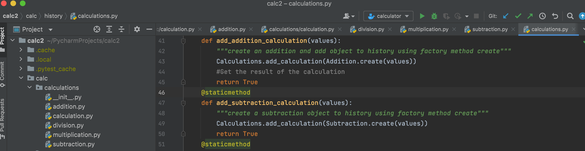
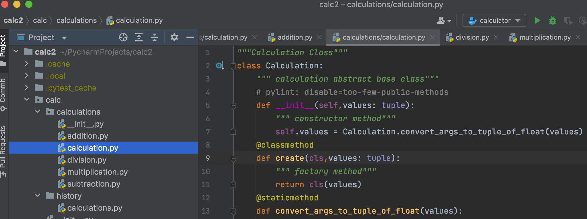

The separation of concerns (SoC) is one of the most fundamental principles in software development.
It is so crucial that 2 out of 5 SOLID principles (Single Responsibility and Interface Segregation) are direct derivations from this concept.
The principle is simple: We should not write our program as one solid block, instead, break up the code into chunks that are finalized tiny pieces of the system each able to complete a simple distinct job.
>> Please select below buttons to get more info about each testing pattern.
SoC for programming funtions
If we take the lowest level (the actual programming code), SoC instructs us to avoid writing long complex functions. When the function starts to bloat up in size, this is the red flag that the method is possibly taking care of too many things at once.
In such a case SoC pushes us to refactor it, turning into a more laconic and descriptive revision. During this process,
parts of the original algorithm get exported and encapsulated in separate smaller functions with a private access level. We gain the code clarity, and chunks of the algorithm eventually become reusable by other parts, even if we initially didn’t expect this to happen.

In the above calculator data if you see , we have done Refactoring where we had more lines of code and we simplified the codes and saved it into
one method.
We do Refactor as the more lines found in a method, the harder it’s to figure out what the method does. This is the main reason for this refactoring.
Besides eliminating rough edges in your code, extracting methods is also a step in many other refactoring approaches.
SoC for the system’s design
The primary goal of the system’s design is to outline the boundaries for the module’s awareness of each other.
Every existing architectural pattern provides this strategy. Take we, for example, the Model-View-Controller, we would see that the View is not allowed to interact with the Model directly and should use the Controller as the intermediary.

SoC for modules
At a bit higher level, this principle tells us to group the functions under self-contained modules, each responsible for the fulfillment of a single set of tasks that have a clear logical correlation.
The process very much resembles what we had to do for functions: estrange less-closely related functionality and group up the features serving the same distinct purpose.

In our Calculator as you can see on the left side , we have grouped all our calculator calculation functions together in one module (i.e Calculations )
And another stucture name History where we will store all the result of the calculation seperately in that particular python file.
Two types of Separation :
Horizontal Separation of Concerns refers to the process of dividing an application into logical layers of functionally that fulfill the same role within the application.
One common division for graphical user interface applications is the separation of processes into the layers of Presentation, Business, and Resource Access.
Vertical Separation of Concerns refers to the process of dividing an application into modules of functionality that relate to the same feature or sub-system within an application. Vertical separation divides the features of an application holistically, associating any interface, business, and resource access concerns within a single boundary.
Separating the features of an application into modules clarifies the responsibly and dependencies of each feature which can aid in testing and overall maintenance. Boundaries may be defined logically to aid in organization, or physically to enable independent development and maintenance.
Architecture
At an architectural level, separation of concerns is a key component of building layered applications. In a traditional N-tier application structure, layers might include data access, business logic, and user interface. More modern N-tier application designs might include a core domain model and separate infrastructure modules in addition to one or more front end services and/or user interfaces. Web pages, to a greater or lesser degree, separate concerns relating to structure, logic, and formatting through the use of HTML, JavaScript, and CSS.
At a lower level, the networking model used by the Internet is broken into a series of layers each with specific concerns and responsibilities, and demonstrates how separation of concerns can be effectively applied.